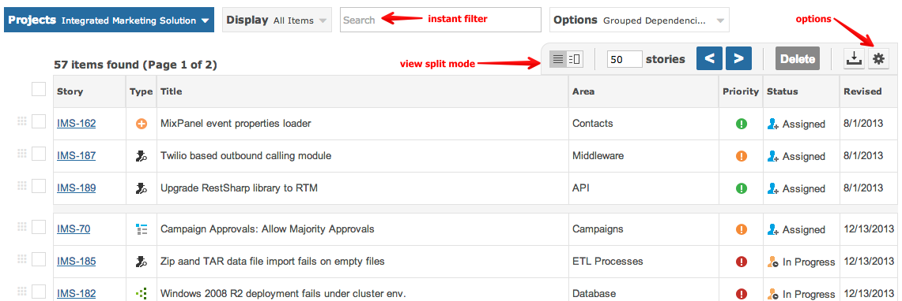
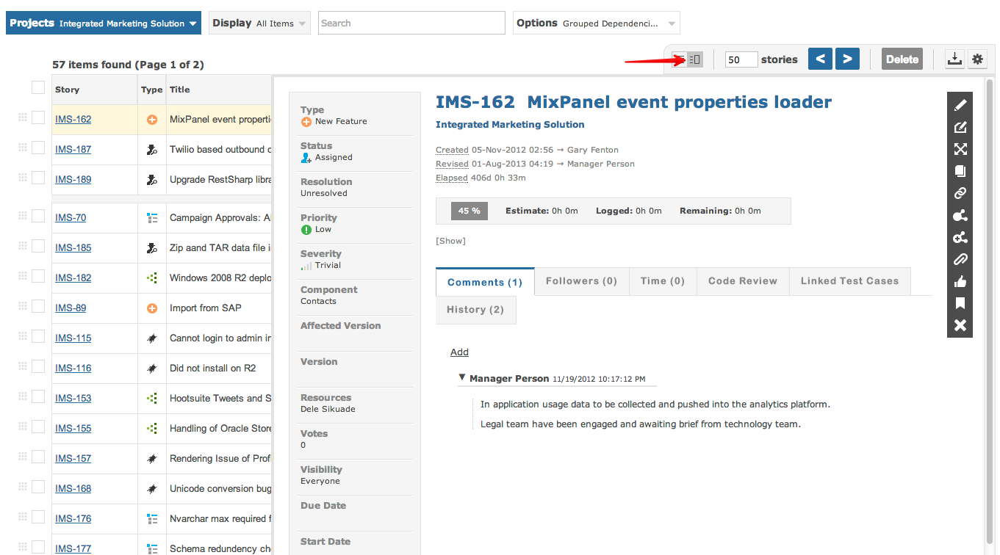

The items grid lists all items that matched the search filter.

The following capabilities are available:
You can choose the traditional grid view or the split view, your preference can be saved to your App-Nav card.
